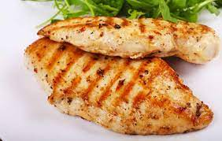
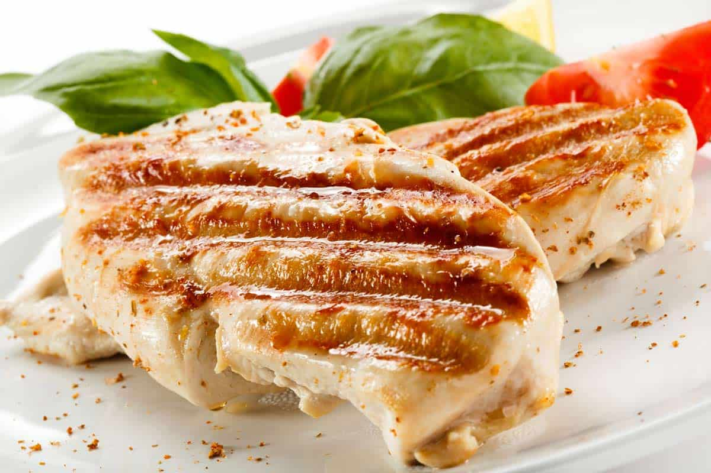

Pollo a la plncha
Ingredientes:
- 6-8 filetes pechuga de pollo
- 3-4 dientes ajo pequeños
- 1/2 limón
- 1/2 cucharadita orégano seco
- 1/2 cucharadita pimienta
- 1/2 cucharadita sal
- 1/2 cucharadita perejil seco
- 1 cucharada aceite oliva
Paso a paso:
- Lavar bien los filetes y dejarlos escurrir. Mientras prensar los ajos y exprimir el limon. Añadirlo junto con el aceite, las especias, la sal y la pimienta en un plato plano y mezclarlo todo. Empapa cada filete en la mezcla y reserva.
- En una sartén muy caliente freír cada filete a fuego alto durante un minuto aproximadamente
- Y ya estaria hecho el pollo a la plancha

